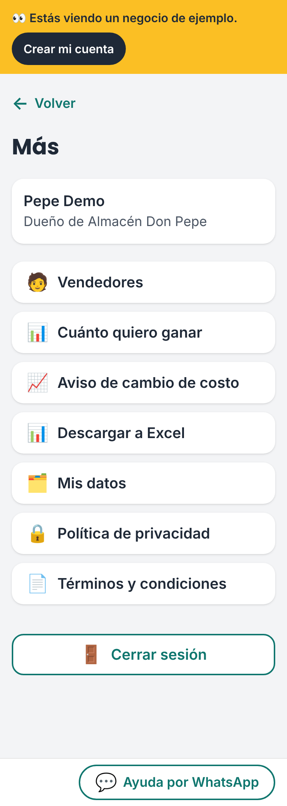
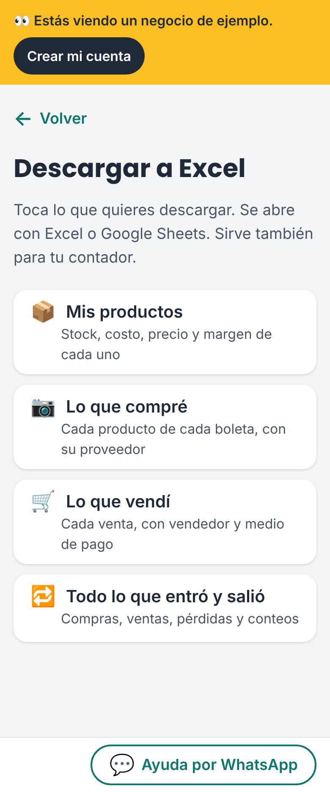
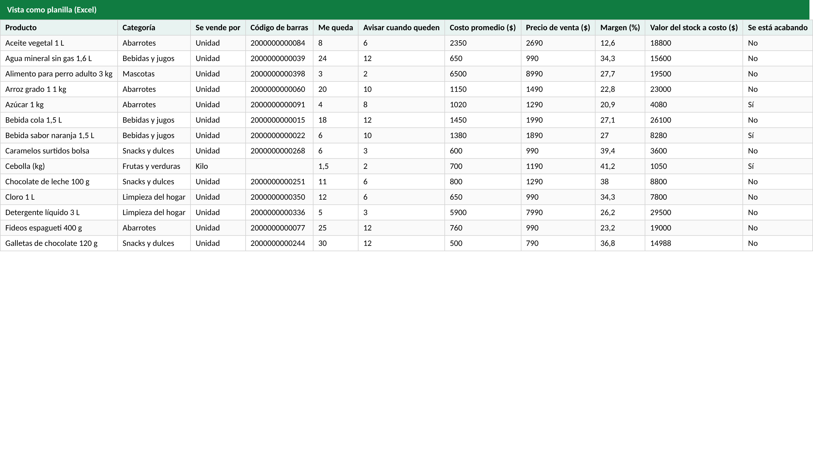
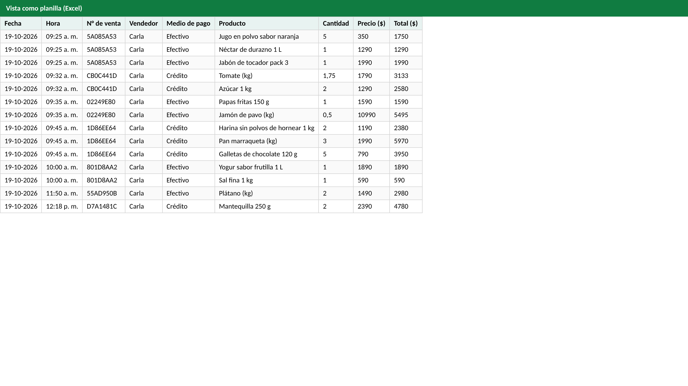
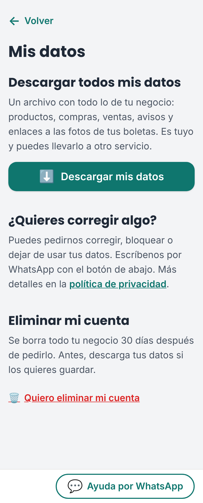
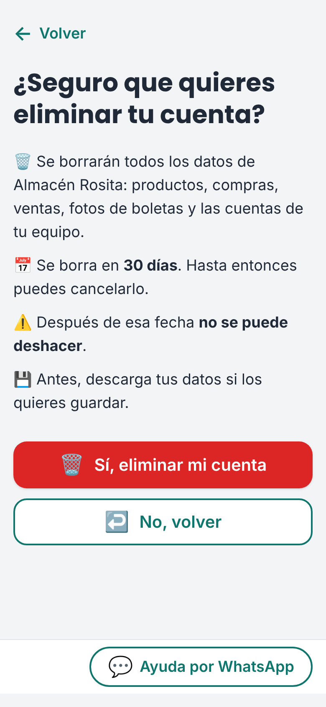
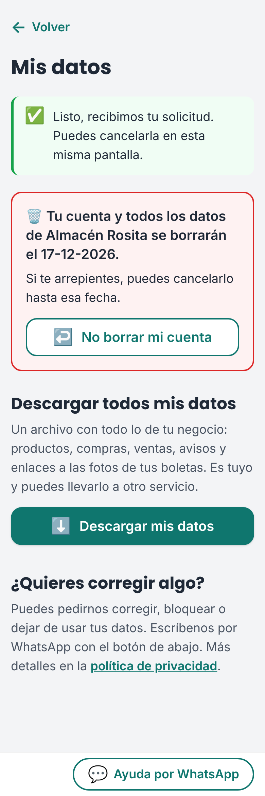
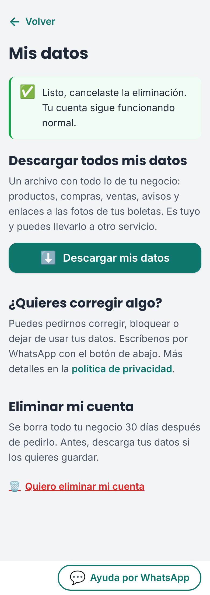

▶ Video del recorrido
El recorrido principal de la fase, como lo haría un almacenero.
El dueño descarga a Excel sus productos, compras, ventas y movimientos. En “Mis datos” cualquiera descarga todos sus datos (Ley 21.719) y el dueño puede pedir eliminar la cuenta: se borra todo a los 30 días, con opción de arrepentirse.
El recorrido principal de la fase, como lo haría un almacenero.
Dos opciones nuevas: “Descargar a Excel” (solo el dueño, porque incluye costos) y “Mis datos”.

Cuatro botones grandes. El archivo se abre con Excel o Google Sheets y sirve también para el contador.

Una fila por producto, con stock, costo, precio, margen y valor del stock. Columnas en español, pesos sin decimales y fechas DD-MM-AAAA.

Cada producto vendido, con fecha, hora, vendedor y medio de pago.

Descargar todos los datos en un archivo (derecho de acceso y portabilidad), cómo pedir correcciones, y al final “Quiero eliminar mi cuenta”. (En el demo no aparece eliminar.)

Explica qué se borra, que hay 30 días para arrepentirse y que después no se puede deshacer.

Muestra la fecha en que se borrará todo y un botón para arrepentirse.

Con “No borrar mi cuenta” todo sigue normal.
